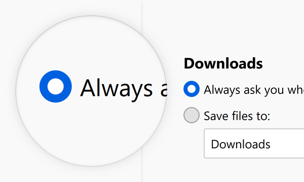
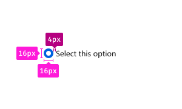
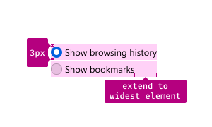
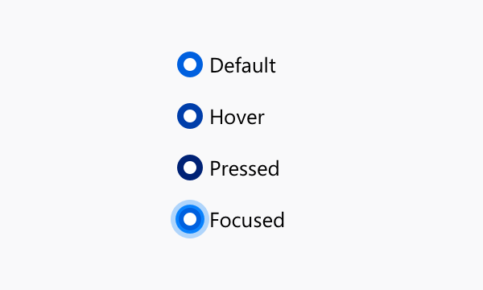
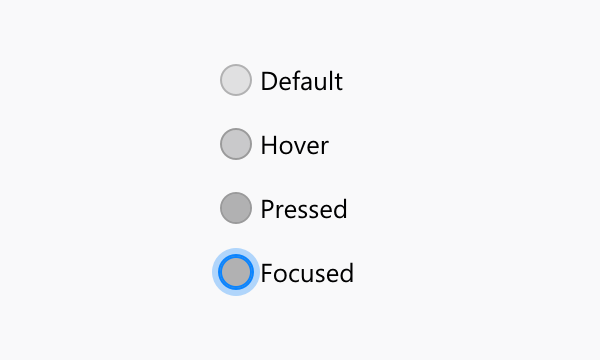

Radio Buttons
Radio buttons allow a selection of one option from a group of mutually exclusive options.
Usage

Use radio buttons to provide people with a choice from a set of two to five mutually exclusive options. For example to offer a choice of how to save downloads.
Combination
Label Groups of Radio Buttons
Start every group of radio buttons with a label that defines what these options are about.
Between 2-5 Choices
Do
Don’t
Don’t
Always Exactly One Selected Choice
In any groups of radio buttons, one must always be selected. Do not use a group of radio buttons if no selected button is an option.
Do
Don’t
Consider the Order of Choices
-
Make the default the first choice if possible.
-
If choices describe a range of impact to browsing behavior, order them from greatest impact to least impact. Do not force default to top if it breaks the sequence.
Style
Radio Buttons consist of a part to indicate their state and a label to describe the choice it represents.
Indicator & Label
Use the indicator to show whether the radio button is selected or not.
Use the label to make the choice clear.
Dimensions

Corner Radius: 100%
Height: 16px
Width: 16px
Horizontal Padding: 4px
Text and Color
Text: Body 10
Text Color: Grey 90 #0c0c0d
Behaviors
Selected / Unselected
Selected:
Icon: Radio-Button-Marker
{kind=link}
Background Color: Blue 60 #0060df
Unselected:
Background Color: Grey 90 a10 rgba(12, 12, 13, 0.1)
Border: 1px Grey 90 a30 rgba(12, 12, 13, 0.3)
Clicktarget

A radio button can be selected by clicking on the area of its indicator as well as its label. Usually the clicktarget extends to the same width for each element in a collection of radio buttons. This results in a click target that extends beyond the label, for all elements shorter than the longest.
Clicking a radio button selects it on release of the click. If, during the click, the mouse is moved off of the radio button, it does not become selected.
Interaction
Selected

Background Color:
Default: Blue 60 #0060df
Hover: Blue 70 #003eaa
Pressed: Blue 80 #002275
Unselected

Background Color:
Default: Grey 90 a10 rgba(12, 12, 13, 0.1)
Hover: Grey 90 a20 rgba(12, 12, 13, 0.2)
Pressed: Grey 90 a30 rgba(12, 12, 13, 0.3)
Focused
Border: none
Box Shadow: 0 0 0 1px #0a84ff inset, 0 0 0 1px #0a84ff, 0 0 0 4px rgba(10, 132, 255, 0.3)
Copy Rules
-
Use the imperative voice for radio button labels.
-
Do not use terminal punctuation for radio button labels.
-
Maintain parallel construction for lists of related radio button labels.